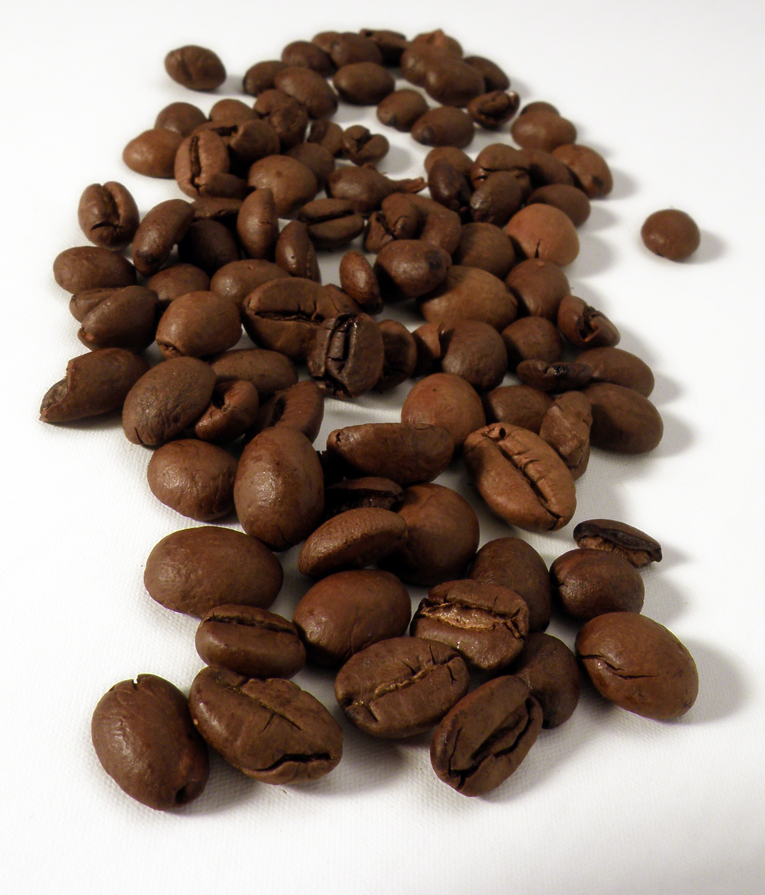

Study the genuine IKEA historical catalogue and current professional identities in the existing teaching gallery. Observe hierarchy, colour, type and context before deciding which relationship can inform your own work. Analyse-only references are not production assets.
Knowledge before controls
A mood board argues for direction; a thumbnail explores an idea; an artboard develops a defined layout. A mask changes visibility; an adjustment changes image relationships. Hierarchy, value/colour and type must help the audience understand this brief.
What this assesses
MM12 image-manipulation outcomes 1.1–1.5: purposeful manipulation, image context, recoverable procedures, design principles and communication. Teacher O/C/P evidence is judged through the same criteria. Knowledge/reflection supports correction. This still-image project does not certify motion, sound or the whole course.
Session 1 · Lessons 1
Brief, research and concepts
Suggested 70-minute block; adjust the existing allocation after the diagnostic.
TODAYOne meaningful stage at a time; document only consequential decisions.
01
Read the client problem
Start here: read or listen to the theory deck (about 10 minutes, with checkpoint questions), then come back.
IN SHORTA peer can restate your intended message and constraints.
READ ALOUD
DOCUMENT: Client brief + journal SELECT: One selected client TOOLS / ROUTE: Client studio → client brief → journal
Read the backstory, audience and approved factual copy. Identify what the older communication got wrong.
Choose a client or propose an equivalent one. Record the actual problem, viewing encounter and one observable communication goal in the journal.
Name which facts must remain and which visual decisions are yours. Agree feasible checkpoints with the teacher.
Treatment: A controlled visual variation of an idea.
Evidence anchor: A filename, layer/control or specific visible result.
OpenAI image generation, art-directed for Chad · Original AI-assisted classroom production asset. Raw production source; not a software capture. Full credit/licence.
WHYA design decision has a purpose when it changes what this audience can understand.
CHECKA peer can restate your intended message and constraints.
FIXIf the goal says only “make it look good”, name the first message and what the viewer needs next.
WORKED EXAMPLE · DIFFERENT OBJECTParallel practice: use the separate seed-library source. The teacher models the reasoning and relevant control, then students choose on their own client. A finished client composition is not supplied.
STRETCH (AFTER THE CHECK PASSES)After this check passes, test a changed viewing condition and explain which relationship needs to change.
02
Study genuine references
IN SHORTBoth references have traceable sources and distinct fact/inference statements.
READ ALOUD
DOCUMENT: Reference analysis record SELECT: Two genuine historical/current references TOOLS / ROUTE: Sources → primary campaign/catalogue pages
Open the IKEA Museum historical catalogue and a contemporary professional identity from the existing teaching gallery.
Record maker/date/medium/source. Separate one visible observation, one sourced contextual fact and one interpretation for each.
Explain a useful design relationship and the limit of comparing different media. Keep references for study separate from production rights.
Treatment: A controlled visual variation of an idea.
Evidence anchor: A filename, layer/control or specific visible result.
epSos.de · CC BY 2.0. Raw production source; not a software capture. Full credit/licence.
WHYContext affects image meaning; preference alone does not establish an audience effect.
CHECKBoth references have traceable sources and distinct fact/inference statements.
FIXIf you cannot verify a contextual claim, label it as a hypothesis or replace it with a sourced fact.
WORKED EXAMPLE · DIFFERENT OBJECTParallel practice: use the separate seed-library source. The teacher models the reasoning and relevant control, then students choose on their own client. A finished client composition is not supplied.
STRETCH (AFTER THE CHECK PASSES)After this check passes, test a changed viewing condition and explain which relationship needs to change.
03
Build a direction board
IN SHORTEach selected ingredient has a reason and the editable/viewing files reopen.
READ ALOUD
DOCUMENT: Editable mood board + PNG SELECT: A small meaningful set of references TOOLS / ROUTE: Excalidraw.com → image/text tools → editable scene/export
Open Excalidraw in the browser. Insert the chosen local image using its image tool or drag the file onto the canvas; place a few credited references for study.
Use the text tool to label each source and its purpose. Add proposed palette-role labels and title/detail type candidates. Keep the board readable.
Open the main menu and save the editable .excalidraw scene. Export a PNG viewing copy. Reopen the scene and change one label to check editability. If blocked, use paper plus a clear photograph and the same credits.
Treatment: A controlled visual variation of an idea.
Evidence anchor: A filename, layer/control or specific visible result.
Filippo Diotalevi from London, United KIngdom · CC BY 2.0. Raw production source; not a software capture. Full credit/licence.
WHYA mood board argues for a direction; it is different from a layout.
CHECKEach selected ingredient has a reason and the editable/viewing files reopen.
FIXRemove attractive items whose purpose you cannot explain. Do not confuse an analyse-only ad with a production asset.
WORKED EXAMPLE · DIFFERENT OBJECTParallel practice: use the separate seed-library source. The teacher models the reasoning and relevant control, then students choose on their own client. A finished client composition is not supplied.
STRETCH (AFTER THE CHECK PASSES)After this check passes, test a changed viewing condition and explain which relationship needs to change.
04
Compare three concepts
IN SHORTA viewer can distinguish three concepts before colour or detail.
READ ALOUD
DOCUMENT: Thumbnail sheet + journal SELECT: Three distinct communication devices or arrangements TOOLS / ROUTE: Paper, Excalidraw or existing drawing tools
Draw three small thumbnails with the same approved information. Change the dominant arrangement or communication device.
Name what each makes visible first and one likely advantage/problem for this viewer. No finished effects are needed.
Choose a direction using the brief and feasible controls. Retain a rejected concept and reason.
Treatment: A controlled visual variation of an idea.
Evidence anchor: A filename, layer/control or specific visible result.
Shixart1985 · CC BY 2.0. Raw production source; not a software capture. Full credit/licence.
WHYAlternatives reveal decisions. Three recolourings of one layout test treatments, not concepts.
CHECKA viewer can distinguish three concepts before colour or detail.
FIXIf ideas look identical, change how the message is carried: scene, object relationship, image/type relationship or another defensible approach.
WORKED EXAMPLE · DIFFERENT OBJECTParallel practice: use the separate seed-library source. The teacher models the reasoning and relevant control, then students choose on their own client. A finished client composition is not supplied.
STRETCH (AFTER THE CHECK PASSES)After this check passes, test a changed viewing condition and explain which relationship needs to change.
Session 2 · Lessons 2
Treatments and production foundations
Suggested 70-minute block; adjust the existing allocation after the diagnostic.
TODAYOne meaningful stage at a time; document only consequential decisions.
05
Test colour and type treatments
Recall first (from last lesson, no peeking):
How does a concept differ from a treatment?
What turns a reference into usable evidence?
What must the client invitation communicate first?
Say or write your answers, then check them against your file.
IN SHORTThe two views differ in the intended variable and the reason refers to visible evidence.
READ ALOUD
DOCUMENT: Two treatment views SELECT: One selected concept TOOLS / ROUTE: Existing Design Lab → colour/typography studios
Predict one useful colour/value or type-spacing change for your concept. Keep the compared arrangement and message similar.
Use a focused Design Lab study to compare the change. Name the wheel model when using complementary/analogous language; inspect actual text/background values.
Export the study and record the selected treatment, visible evidence and a trade-off. Your palette/type may differ from the client starting suggestions.
Treatment: A controlled visual variation of an idea.
Evidence anchor: A filename, layer/control or specific visible result.
PattayaPatrol · CC BY-SA 4.0. Raw production source; not a software capture. Full credit/licence.
WHYRelationships must serve readable meaning rather than random control use.
CHECKThe two views differ in the intended variable and the reason refers to visible evidence.
FIXIf many variables changed, isolate one and compare again before defending a result.
WORKED EXAMPLE · DIFFERENT OBJECTParallel practice: use the separate seed-library source. The teacher models the reasoning and relevant control, then students choose on their own client. A finished client composition is not supplied.
STRETCH (AFTER THE CHECK PASSES)After this check passes, test a changed viewing condition and explain which relationship needs to change.
SIMULATION · Design Lab Predict one purposeful change, compare its visible effect and export the study. Open Design Lab ↗ Back in your log: Carry one justified relationship into your own design. Works offline; nothing you do in it is collected.
06
Build and keep a swatch set
IN SHORTFive values match the client record and can be selected again.
READ ALOUD
DOCUMENT: Practice PSD + client palette files SELECT: Client ACO or one foreground colour TOOLS / ROUTE: Window → Swatches → panel menu → Import Swatches; manual colour picker route
In the separate practice document, open Window → Swatches. From the panel menu choose Import Swatches; select this client’s palette.aco. Retain existing collections.
Check each imported colour against palette.json. If import is unavailable, click the foreground-colour chip, enter the six-digit HEX value, confirm, then create a new named swatch from the Swatches panel. Repeat by role.
Apply two colours to a practice title/background pair, compare readability, save the practice PSD and record the roles. ASE is an alternative exchange file; its native import must also be checked.
Native procedure not yet run. Photoshop 2026 action captures and saved/reopened demonstration are pending an exclusive native run. Use only with a teacher demonstration until verified.
CHECKFive values match the client record and can be selected again.
FIXDo not replace or delete existing swatches. If no exact entry/import route is visible, ask for the current version demonstration rather than guessing.
WORKED EXAMPLE · DIFFERENT OBJECTParallel practice: use the separate seed-library source. The teacher models the reasoning and relevant control, then students choose on their own client. A finished client composition is not supplied.
STRETCH (AFTER THE CHECK PASSES)After this check passes, test a changed viewing condition and explain which relationship needs to change.
07
Create the print study
IN SHORTThe document reports 2550 × 3300 pixels and a layered PSD is saved.
READ ALOUD
DOCUMENT: New print study SELECT: New document settings TOOLS / ROUTE: File → New → custom document → Create
Choose File → New. Set units Pixels, width 2550, height 3300, resolution 300 pixels/inch, RGB colour, 8 bit. Choose a white background and create.
Check Image → Image Size without resampling to confirm pixel dimensions. This is a school RGB print study, not a verified press profile.
Save as a new layered PSD in the project folder. Use a project code and stage name; preserve supplied source files.
Native procedure not yet run. Photoshop 2026 action captures and saved/reopened demonstration are pending an exclusive native run. Use only with a teacher demonstration until verified.
Treatment: A controlled visual variation of an idea.
Evidence anchor: A filename, layer/control or specific visible result.
WHYDimensions describe the delivery encounter; a verified printer profile is a separate requirement.
CHECKThe document reports 2550 × 3300 pixels and a layered PSD is saved.
FIXIf dimensions use inches unexpectedly, select Pixels and recheck. Do not resize an existing source destructively to hide a wrong document.
WORKED EXAMPLE · DIFFERENT OBJECTParallel practice: use the separate seed-library source. The teacher models the reasoning and relevant control, then students choose on their own client. A finished client composition is not supplied.
STRETCH (AFTER THE CHECK PASSES)After this check passes, test a changed viewing condition and explain which relationship needs to change.
08
Practise a recoverable mask
IN SHORTThe correct mask is selected and the original image can be revealed again.
READ ALOUD
DOCUMENT: Seed-library practice PSD SELECT: The placed image layer, then its mask thumbnail TOOLS / ROUTE: File → Place Embedded; Select → Subject; Layer mask; Brush
Open the separate seed-library practice source in a practice PSD. Use File → Place Embedded for a permitted secondary source, confirm placement and rename its layer.
Select the secondary image layer. Use Select → Subject, inspect the selection, then add a layer mask. Inspect the actual edge at 100% and at the intended viewing size.
Click the mask thumbnail before Brush. Set a soft round brush, Opacity 100%, Flow 100%; choose a brush size suited to the edge. Black hides and white reveals. Make a small reversible change, then undo/redo to inspect it.
Native procedure not yet run. Photoshop 2026 action captures and saved/reopened demonstration are pending an exclusive native run. Use only with a teacher demonstration until verified.
Treatment: A controlled visual variation of an idea.
Evidence anchor: A filename, layer/control or specific visible result.
WHYThe mask changes visibility without erasing the original pixels. This is a practice technique, not a required client composition.
CHECKThe correct mask is selected and the original image can be revealed again.
FIXIf pixels are being painted, undo and select the mask thumbnail. If Select Subject is unsuitable, ask for a taught manual selection method; do not assume the automatic result is correct.
WORKED EXAMPLE · DIFFERENT OBJECTParallel practice: use the separate seed-library source. The teacher models the reasoning and relevant control, then students choose on their own client. A finished client composition is not supplied.
STRETCH (AFTER THE CHECK PASSES)After this check passes, test a changed viewing condition and explain which relationship needs to change.
Session 3 · Lessons 3
Craft and delivery checks
Suggested 70-minute block; adjust the existing allocation after the diagnostic.
TODAYOne meaningful stage at a time; document only consequential decisions.
09
Practise a purposeful adjustment
Recall first (from last lesson, no peeking):
What does a layer mask change?
How would you isolate an adjustment?
How do tracking and kerning differ?
Say or write your answers, then check them against your file.
IN SHORTToggling isolates the intended effect and unrelated areas are retained.
READ ALOUD
DOCUMENT: Practice composite PSD SELECT: Base image, then adjustment layer/mask TOOLS / ROUTE: Layer → New Adjustment Layer → Curves; optional Create Clipping Mask
Identify one actual tonal mismatch in the separate practice file. Add a Curves adjustment above the relevant image through Layer → New Adjustment Layer → Curves.
Predict the tonal change before editing. Make one small curve change and toggle the adjustment to compare at the same view. Exact curve values depend on the source; do not copy an unrelated recipe.
If the change should affect only the intended base image, select the adjustment and use Layer → Create Clipping Mask. Refine the adjustment’s mask where needed. Save a version and record the control/result.
Native procedure not yet run. Photoshop 2026 action captures and saved/reopened demonstration are pending an exclusive native run. Use only with a teacher demonstration until verified.
Treatment: A controlled visual variation of an idea.
Evidence anchor: A filename, layer/control or specific visible result.
WHYA controlled comparison makes the change explainable and revisable.
CHECKToggling isolates the intended effect and unrelated areas are retained.
FIXIf everything changes unexpectedly, inspect clipping/base relationship and adjustment mask before adding more effects.
WORKED EXAMPLE · DIFFERENT OBJECTParallel practice: use the separate seed-library source. The teacher models the reasoning and relevant control, then students choose on their own client. A finished client composition is not supplied.
STRETCH (AFTER THE CHECK PASSES)After this check passes, test a changed viewing condition and explain which relationship needs to change.
10
Keep type editable
IN SHORTText remains editable and the student can identify pair/range/baseline controls.
READ ALOUD
DOCUMENT: Practice title/detail layers SELECT: Type layer and selected text or insertion point TOOLS / ROUTE: Type tool → Window → Character / Paragraph
Create title and detail text with the Type tool. Use available school fonts; record any substitution rather than installing fonts.
Open Window → Character and Paragraph. On selected title text compare tracking 0 and 30 as a practice-only range. For a particular pair, place the insertion point between the letters before testing kerning. Leading changes baseline separation.
Choose a readable hierarchy for the intended view, align related details and preserve Type layers. Do not rasterise text merely to move or resize it.
Native procedure not yet run. Photoshop 2026 action captures and saved/reopened demonstration are pending an exclusive native run. Use only with a teacher demonstration until verified.
Treatment: A controlled visual variation of an idea.
Evidence anchor: A filename, layer/control or specific visible result.
WHYTypography relationships guide reading; a practice value is not a mandated design answer.
CHECKText remains editable and the student can identify pair/range/baseline controls.
FIXIf the wrong text changes, check the layer and selection. If a pair setting affects the whole line, inspect whether a range rather than an insertion point is selected.
WORKED EXAMPLE · DIFFERENT OBJECTParallel practice: use the separate seed-library source. The teacher models the reasoning and relevant control, then students choose on their own client. A finished client composition is not supplied.
STRETCH (AFTER THE CHECK PASSES)After this check passes, test a changed viewing condition and explain which relationship needs to change.
11
Adapt a second view
IN SHORTBoth dimensions are correct, sources editable and the message survives the smaller view.
READ ALOUD
DOCUMENT: Screen PSD or screen artboard SELECT: Artboard group/tool or a separate new document TOOLS / ROUTE: Move tool group → Artboard tool; Properties dimensions; or File → New
Optional artboard route: select the Artboard tool from the Move tool group. Create/select a screen artboard; set width 1080 and height 1350 pixels in Properties and name it Screen. Verify the print artboard separately.
If artboards are unavailable or slow to learn, create a separate 1080 × 1350 RGB document through File → New. Bring in permitted sources and editable text; retain layers.
Reflow the chosen concept for the new encounter. Retain essential client facts; move/reprioritise rather than stretch the entire print image. Save the editable screen source.
Native procedure not yet run. Photoshop 2026 action captures and saved/reopened demonstration are pending an exclusive native run. Use only with a teacher demonstration until verified.
Treatment: A controlled visual variation of an idea.
Evidence anchor: A filename, layer/control or specific visible result.
WHYDifferent encounters can require different arrangements even when the idea stays the same.
CHECKBoth dimensions are correct, sources editable and the message survives the smaller view.
FIXIf the subject is distorted, undo whole-image stretching. Select the relevant item/group and adapt the arrangement.
WORKED EXAMPLE · DIFFERENT OBJECTParallel practice: use the separate seed-library source. The teacher models the reasoning and relevant control, then students choose on their own client. A finished client composition is not supplied.
STRETCH (AFTER THE CHECK PASSES)After this check passes, test a changed viewing condition and explain which relationship needs to change.
12
Save and reopen the sources
IN SHORTPSD controls and exported dimensions remain correct after reopening.
READ ALOUD
DOCUMENT: Print + screen PSDs and PNGs SELECT: Each relevant document/artboard TOOLS / ROUTE: File → Save As / Save a Copy; File → Export → Export As
Save each layered PSD. Use File → Export → Export As for a viewing PNG; confirm the intended pixel dimensions and sRGB viewing colour.
Close only the saved practice/project copy and reopen its PSD. Check a source, editable Type layer, meaningful mask and adjustment. Do not close other unsaved documents.
Open each PNG separately, inspect the intended full view and 100% detail, then compare it with the PSD. Record filename, dimensions and any mismatch.
Native procedure not yet run. Photoshop 2026 action captures and saved/reopened demonstration are pending an exclusive native run. Use only with a teacher demonstration until verified.
Treatment: A controlled visual variation of an idea.
Evidence anchor: A filename, layer/control or specific visible result.
WHYA handoff must survive reopening, not simply a successful save click.
CHECKPSD controls and exported dimensions remain correct after reopening.
FIXIf reopening shows a flat image, locate the PSD rather than PNG. If an export has wrong content/dimensions, check the selected artboard and export options.
WORKED EXAMPLE · DIFFERENT OBJECTParallel practice: use the separate seed-library source. The teacher models the reasoning and relevant control, then students choose on their own client. A finished client composition is not supplied.
STRETCH (AFTER THE CHECK PASSES)After this check passes, test a changed viewing condition and explain which relationship needs to change.
Session 4 · Lessons 4
Test, adapt and defend
Suggested 70-minute block; adjust the existing allocation after the diagnostic.
TODAYOne meaningful stage at a time; document only consequential decisions.
13
Test actual communication
Recall first (from last lesson, no peeking):
What must survive a PSD reopen?
How does a phone version differ from a scaled print image?
Why are two viewers not an audience survey?
Say or write your answers, then check them against your file.
IN SHORTThe record distinguishes what viewers said from your interpretation.
READ ALOUD
DOCUMENT: Anonymous viewer-test record SELECT: First export at intended view TOOLS / ROUTE: Show → neutral questions → journal
Before explaining your design, show it at the intended view to two viewers. Ask what they noticed first and what they think is being offered.
Record their actual responses without peer names. Compare each with your intended reading and practical next action.
Identify one meaningful mismatch and a predicted repair. Keep disagreement and state the limit of a two-person diagnostic.
Treatment: A controlled visual variation of an idea.
Evidence anchor: A filename, layer/control or specific visible result.

Alina Zienowicz (Ala z), e-mail · CC BY-SA 3.0. Raw production source; not a software capture. Full credit/licence.
WHYActual response reveals a communication problem that a self-description may miss.
CHECKThe record distinguishes what viewers said from your interpretation.
FIXIf your question tells them the answer, repeat with a neutral prompt on the next version.
WORKED EXAMPLE · DIFFERENT OBJECTParallel practice: use the separate seed-library source. The teacher models the reasoning and relevant control, then students choose on their own client. A finished client composition is not supplied.
STRETCH (AFTER THE CHECK PASSES)After this check passes, test a changed viewing condition and explain which relationship needs to change.
14
Revise one relationship
IN SHORTBefore/after and the recorded test trace a purposeful change.
READ ALOUD
DOCUMENT: Versioned source + before/after SELECT: The control relevant to the observed mismatch TOOLS / ROUTE: Predict → one change → inspect → retest
Keep a before view. Choose one relevant control or arrangement change based on the mismatch and state the predicted effect.
Change the selected relationship recoverably, save a new version and compare at the same intended view.
Retest the revised message, record the result and one trade-off/remaining limitation. Use actual feedback, not invented improvement claims.
Treatment: A controlled visual variation of an idea.
Evidence anchor: A filename, layer/control or specific visible result.
Alina Zienowicz (Ala z), e-mail · CC BY-SA 3.0. Raw production source; not a software capture. Full credit/licence.
WHYRevision shows how evidence changes a decision.
CHECKBefore/after and the recorded test trace a purposeful change.
FIXIf the change cannot be linked to the mismatch, return to the original problem rather than adding effects.
WORKED EXAMPLE · DIFFERENT OBJECTParallel practice: use the separate seed-library source. The teacher models the reasoning and relevant control, then students choose on their own client. A finished client composition is not supplied.
STRETCH (AFTER THE CHECK PASSES)After this check passes, test a changed viewing condition and explain which relationship needs to change.
15
Respond to a client change
IN SHORTThe student chooses a relevant strategy and can locate the actual evidence.
After taught practice, receive a client-change card from the teacher. Restate the new constraint and predict a response using taught methods.
Choose and make an appropriate change without a supplied composition. Preserve the prior version and inspect the result.
Point to source evidence and explain the effect, a rejected option and a limit. Access supports remain available; any procedural assistance is recorded separately.
Treatment: A controlled visual variation of an idea.
Evidence anchor: A filename, layer/control or specific visible result.
Ndawoje · CC BY-SA 4.0. Raw production source; not a software capture. Full credit/licence.
WHYChanged conditions reveal transfer beyond reproducing a tutorial.
CHECKThe student chooses a relevant strategy and can locate the actual evidence.
FIXIf the requested effect was never taught, ask for an equivalent taught change; do not guess an unseen advanced procedure.
WORKED EXAMPLE · DIFFERENT OBJECTParallel practice: use the separate seed-library source. The teacher models the reasoning and relevant control, then students choose on their own client. A finished client composition is not supplied.
STRETCH (AFTER THE CHECK PASSES)After this check passes, test a changed viewing condition and explain which relationship needs to change.
16
Deliver and revisit
IN SHORTFiles, rights, recipient permissions and Form confirmation are explicitly checked.
READ ALOUD
DOCUMENT: Restricted school Drive folder + Form record SELECT: Checked source/export/planning/decision files TOOLS / ROUTE: School Google Drive → restricted teacher share → existing Form
Assemble print/screen PSDs and PNGs, mood-board source/view, thumbnails/treatments and the downloaded journal/source record. Check each file opens.
Share the restricted school Drive folder with cwadden@gnspes.ca. Submit its link and concise decision evidence through the existing Final reflection and evidence handoff Form. For planning use Proposal and planning.
Keep the Form confirmation and local backup. When teacher feedback is released, record criterion/next action and a fresh revisit linked to the original attempt.
Treatment: A controlled visual variation of an idea.
Evidence anchor: A filename, layer/control or specific visible result.
Shaksham Parimal · CC BY-SA 4.0. Raw production source; not a software capture. Full credit/licence.
WHYEvidence is usable only when the teacher can locate it and the learner can act on feedback.
CHECKFiles, rights, recipient permissions and Form confirmation are explicitly checked.
FIXA local Saved status is not submission. If teacher access fails, correct the restricted share and retain the work while the route is checked.
WORKED EXAMPLE · DIFFERENT OBJECTParallel practice: use the separate seed-library source. The teacher models the reasoning and relevant control, then students choose on their own client. A finished client composition is not supplied.
STRETCH (AFTER THE CHECK PASSES)After this check passes, test a changed viewing condition and explain which relationship needs to change.
Before you submit
Student QA.
Ask for help with a decision
Copy the context, add your current problem and attempted change, then open the shared Coach. Ask for a hint or explanation; keep your assessed concept and final decisions yours.
MM12 · mm12-design-story-v1 · Design a Story client commission
I am developing my own client concept. Current stage: __. Client/audience/intent: __.
My selected layer/control: __. I expected __; I observed __. I tried __.
Explain the relevant principle or give one hint. Do not supply my assessed final composition.
Help me record intent → choice/control → visible evidence → reason.
Open existing Student OS when your school account is enabled. Required submission is the registered project Form and restricted source folder; a local journal or Coach conversation is not a submitted evidence event.
Figures marked Illustration are drawn, not screenshots. Step values are starting points authored for this project. Draft for teacher review; not yet classroom-piloted.